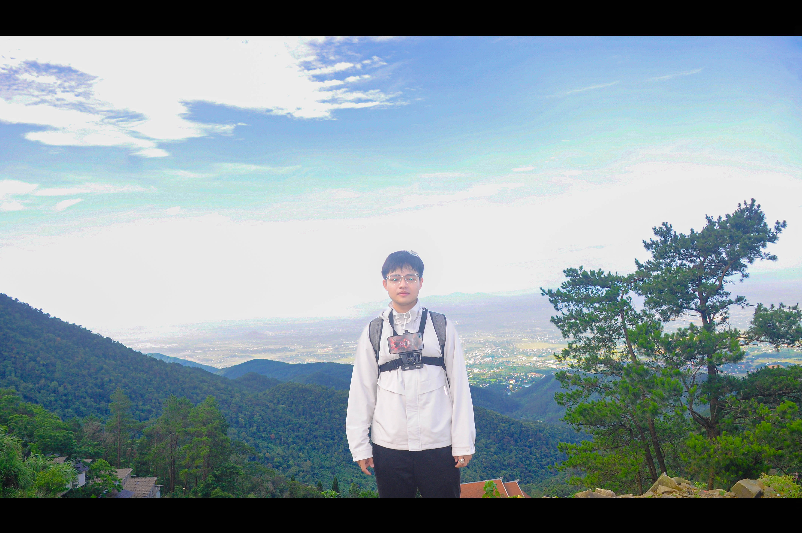

Được ví như một "Đà Lạt thu nhỏ" của miền Bắc, Tam Đảo chào đón du khách bằng tiết trời se lạnh quanh năm và cảnh sắc thiên nhiên thơ mộng ẩn mình trong màn sương mù.
Chạy trốn sự ồn ào của phố thị
Chỉ cách Hà Nội hơn 2 giờ chạy xe, Tam Đảo là địa điểm lý tưởng cho những chuyến đi trốn chớp nhoáng. Đường lên Tam Đảo uốn lượn qua những cánh rừng xanh mát, mang lại cảm giác thích thú cho những ai yêu thích việc rong ruổi trên xe máy.

Một góc sương mù tại Tam ĐảoCảm nhận cá nhân
Đến với Tam Đảo, không gì tuyệt vời hơn là ngồi nhâm nhi ly cà phê ấm nóng tại Quán Gió, phóng tầm mắt xuống toàn cảnh thung lũng. Đêm xuống, dạo bước quanh Quảng trường trung tâm và thưởng thức những món đồ nướng thơm lừng thật sự làm ấm lòng những ngày sương giá.
"Đôi khi, tất cả những gì chúng ta cần chỉ là một ngày cuối tuần gác lại mọi âu lo, trốn lên núi và thả lỏng tâm hồn."
Nhà thờ đá Tam Đảo, Thác Bạc, Tháp truyền hình... đều là những góc check-in tuyệt đẹp bạn không nên bỏ lỡ khi ghé thăm thị trấn nhỏ bé nhưng đầy sức hút này.